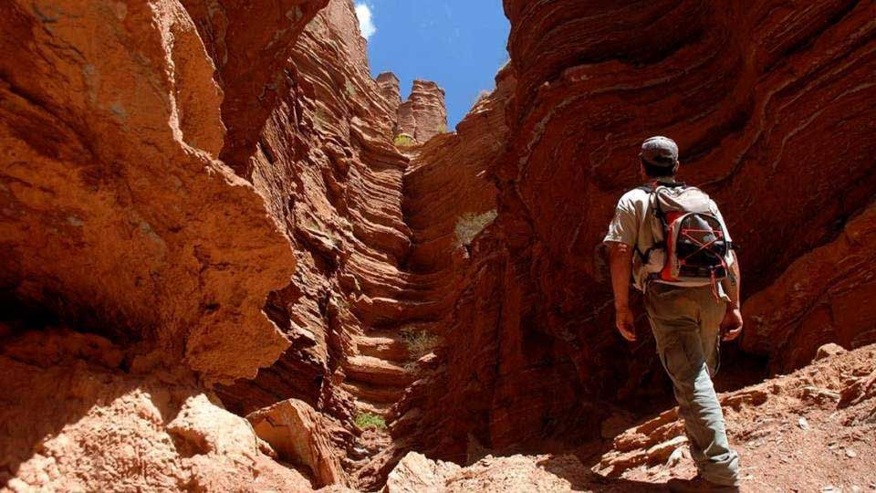

Reencontrate con la naturaleza
Este lugar completamente natural te ofrece laderas arboladas donde los sauces, pinares y mimbres son los protagonistas. Además, te presenta residencias de descanso, hospedajes y verdes paisajes son comunicadas a través de puentes peatonales.
Si lo tuyo en definitiva es la pesca aquí podrás tener la experiencia de atrapar pejerreyes y carpas. En La Florida aparte podrás disfrutar de alojarte en cabañas, bugalows y campins. Y quienes les gusta el trekking o las caminatas seguramente querrán visitar los senderos que bordean el lago. Incluso, es posibilidad darle la vuelta y es una de las actividades que más se realiza en la zona. Una alternativa perfecta para ti.
Este desierto de sal es toda una atracción, está ubicado a solo unos kilómetros del centro de la jurisdicción de San Luis, su nombre se debe a que fue fundado con los restos de la Alberca del Bebedero. Podrás disfrutar de un recorrido bastante interesante fuera de la localidad, ya que es lo suficientemente grande como para apreciar los almacenes cónicos de sal en donde el agua se ha volatilizado.
Se le llama Sierra de las Quijadas en San Luis a un circuito turístico con recursos paleontológicos y culturales imperdibles, además cuenta con restos fósiles y yacimientos históricos que hoy día son un testimonio palpable de la antigua ocupación humana en la tierra. El Parque Nacional Sierra de las Quijadas protege a unos cuantos kilómetros de su portal de acceso un atractivo lugar arqueológico que se caracteriza por la existencia de más de 20 hornillos que fueron utilizados por los Huarpes para la elaboración de piezas con cerámicas.
Encuentra mas info en San Luis.